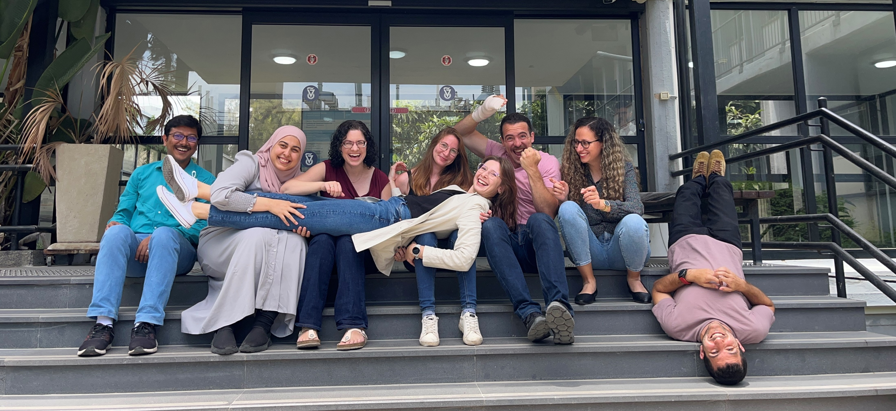

The Poranne Group is a research group working in the field of computational physical organic chemistry. Since October 2021, our group is part of the Schulich Faculty of Chemistry at the Technion—Israel Institute of Technology. We first started working in July 2017 as a sub-group within the laboratory of Prof. Dr. Peter Chen at the Laboratorium für Organische Chemie at the ETH Zürich.
Our work focuses on the investigation of polycyclic aromatic systems and includes characterization of molecular properties, elucidation of structure-property relationships, and illumination of the connection between aromaticity and reactivity in organometallic catalysts. We uncover useful and intuitive connections between structural features and molecular properties, and develop user-friendly pipelines and methods that help connect these abstract properties to real-world synthetic strategies.
The chemical insights that we uncover are leveraged to implement machine-learning and deep-learning models for data-driven molecular design and discovery.
In addition, we work closely with collaborators around the world to better understand the reactivity and behavior of polycyclic aromatic systems, and to harness their unique properties for various applications.
The group believes in an inclusive and collaborative culture, where team-work and mutual respect are top priorities. We are always open to receiving new members who are excited about learning and who are motivated to work towards advancing our understanding of chemistry and molecular design.
